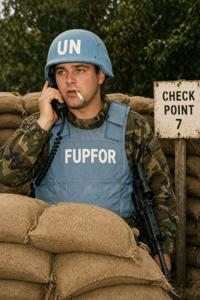
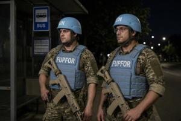

FUPFOR


Former Upper Pannonia Force (FUPFOR) is the international peacekeeping contingent stationed in Former Upper Pannonia (FUP).
The Blue Helmets contingent entered FUP in March 1995 under a UN Security Council resolution, drawn from NATO forces. Its numbers were modest from the outset: the larger peacekeeping operation in Bosnia and Herzegovina left few resources to spare for Pannonia. FUPFOR was never tasked with disarming the warring factions, only with separating them — an achievable goal, since by then the South Drava already divided the two sides, who had little contact on land. Troop numbers have continued to fall since.
Today FUPFOR's duties include controlling FUP's external borders, patrolling the river boundary along the South Drava by boat, and guarding King Svetoplok Airport in Vronovica and the Gowbkaslava hydroelectric plant. The Blue Helmets has no mandate to operate within either de facto republic. Its main base is at Vronovica Airport, with river-patrol bases at Gowbkaslava and Rudec. Operational command, funding, and equipment all run through NATO.
The contingent now numbers around 500 troops, down from roughly 2,500 at deployment in 1995. Its core is a rotating force of motorized infantry from Croatia, Hungary, Slovenia, Romania, and Italy, organized into a single infantry company on wheeled armored personnel carriers, a river patrol boat detachment, and an engineer unit. FUPFOR fields no heavy weapons or armor — small arms, machine guns, and mortars are enough for a separation mission, not a combat one. A brigadier general commands the contingent, reporting through NATO's Allied Joint Force Command in Naples. Since 2013 the post has been held by Caleb Dougherty, a U.S. Air Force brigadier general and former astronaut.
In NATO strategy documents the Upper Pannonian conflict is considered burnt out, FUPFOR's mission is given little weight, and the contingent is funded and supplied on a leftovers basis. It is typically issued weapons and equipment that nobody else wants or that are nearing the end of their service life. Troops in desert-sand camouflage, ill-suited to the local landscape and salvaged from Iraqi or Afghan surplus stocks, are a common sight on the streets of Vronovica.


There have been no major armed incidents since 1995. Even so, FUPFOR troops are a frequent target of protests by local activists who regard them as an occupying force. Zgurian patriots are the most aggrieved, reading the UN's blue-and-white symbols as an insulting breach of the color taboo. Protests generally stay at the level of verbal abuse and placards reading “FUCKFOR” or “Blue People Go Home,” but demonstrators sometimes block the roads FUPFOR troops use to move between their bases and duty stations within the two republics. In the past, the Blue Helmets had to use force to clear such blockades, which never failed to trigger public outrage and formal accusations of violating the Lausanne Agreements. Since 2001, local police have escorted FUPFOR convoys on these routes instead, taking on the job of physically clearing the roads themselves.
Formally part of FUPFOR is the Separate Police Division in the Vronovica Neutral Zone, originally raised from military police. In practice it functions as the Neutral Zone's municipal police force: it answers to UNOMFUP's City Management Department, draws its funding from that department's budget, and recruits mostly from local residents. The division numbers around 120 officers, roughly a third of them on street patrol and checkpoint duty at the Neutral Zone's borders, the rest handling beat policing, investigations, and protection of UNOMFUP facilities.
Categories: Military, International organizations